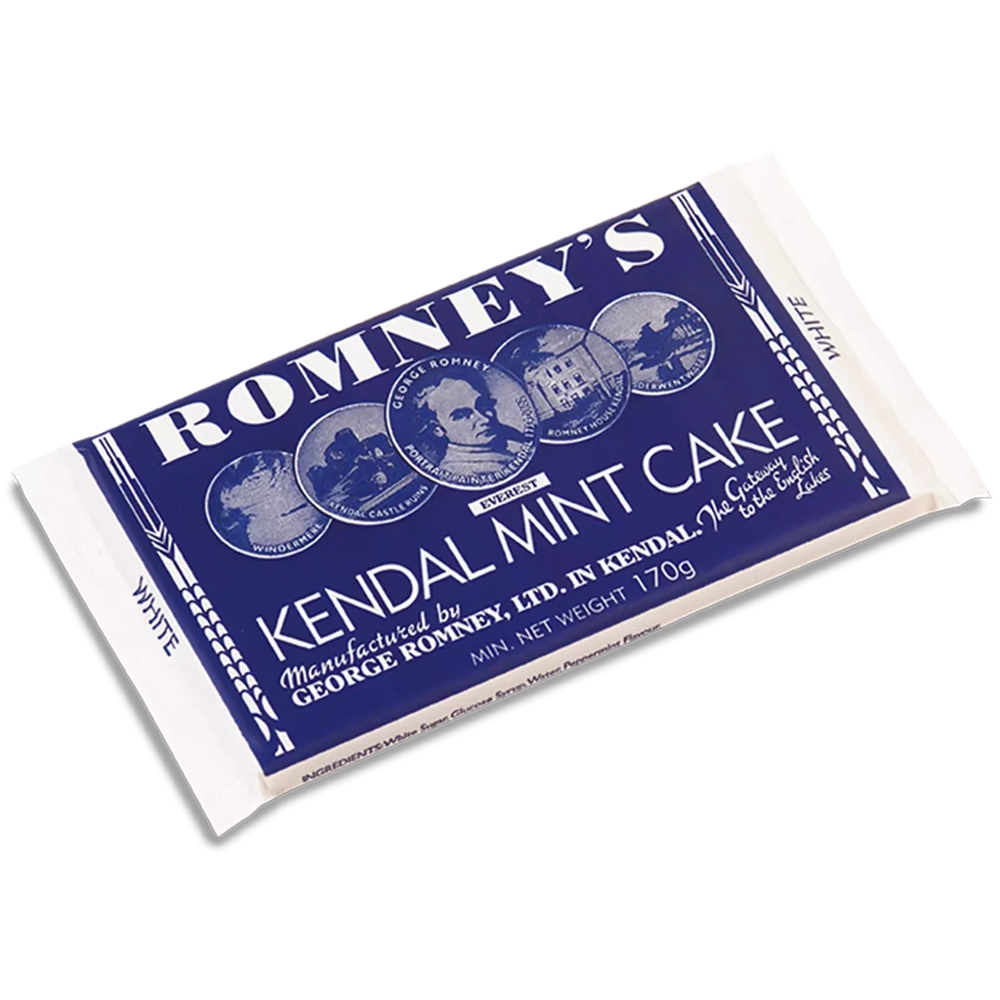

Romney's & confectionery
Kendal Mint Cake 170g
£2.80
A 170g bar of Romney’s classic white Kendal Mint Cake.
BrandRomney’s of Kendal
Black Sheep price£2.80
Pack size170g
ManufacturerGeorge Romney Limited
AvailabilityIn-store stock changes regularly. Please ask us if you need a particular item.
Product identity and available factual details have been checked against the current manufacturer listing. Black Sheep pricing and in-store availability are our own.